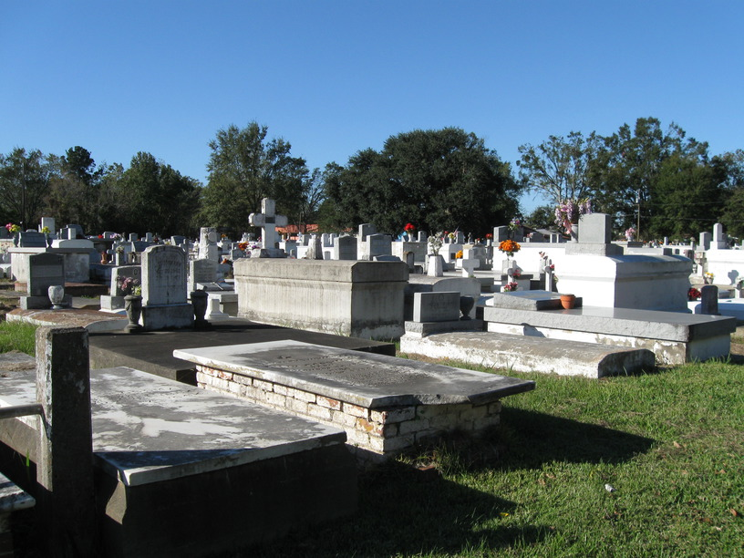

27 Oct 2008, Mamou, LA
Rest day today, so not much to write. Rest days just feel weird. I'm camping in a yard—I got my first rejection when I made my first stop tonight. The (old) man was worried about being liable if I got hurt. Not far down the road I found a good spot, though. The guy's name is Joey & he's a true Cajun—has the accent that I just discovered yesterday. He even gave me some jambalaya for dinner—it was really good. Lots of meat in it.
It's supposed to be cold tonight—in the 30s. I've bundled up & it's time for the sleeping bag.
